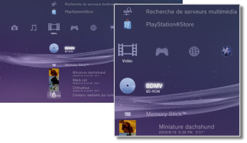

Vidéo > Catégorie Vidéo
Catégorie Vidéo
Les icônes suivantes sont affichées sous  (Vidéo). Les icônes affichées varient en fonction des conditions d'utilisation.
(Vidéo). Les icônes affichées varient en fonction des conditions d'utilisation.

 |
Utilitaire des données de BD | Les données administratives utilisées par les Blu-ray Discs (BD) sont enregistrées. |
|---|---|---|
 |
Recherche de serveurs multimédia | Pour lancer une recherche des serveurs multimédia DLNA connectés au même réseau. |
 |
Serveur multimédia | Pour vous connecter à des serveurs multimédia DLNA et lire les fichiers vidéo enregistrés. L'icône affichée dépend du type de serveur. |
 |
PlayStation®Store | Pour afficher des informations provenant de PlayStation®Store. Cette icône ne s'affiche que dans les pays et régions où le Video Store de PlayStation®Store est disponible. |
 |
BD-ROM / BD-R / BD-RE | Pour lire un disque Blu-ray (BD). |
 |
DVD-ROM / DVD-R / DVD+R / DVD-RW / DVD+RW | Pour lire un DVD ou un disque AVCHD. |
 |
Disque de données | Pour lire des fichiers vidéo enregistrés sur un support disque inscriptible compatible comme un CD-R ou un DVD-R. |
 |
Memory Stick™ | Pour lire des fichiers vidéo enregistrés sur un support Memory Stick™.* |
 |
SD Memory Card | Pour lire des fichiers vidéo enregistrés sur une SD Memory Card.* |
 |
CompactFlash® | Pour lire des fichiers vidéo enregistrés sur une carte CompactFlash®.* |
 |
PSP™ (PlayStation®Portable) | Pour lire des fichiers vidéo enregistrés sur un support Memory Stick™ du système PSP™. |
| PSP™ (PlayStation®Portable) | Pour lire des fichiers vidéo enregistrés dans le stockage système du système PSP™go. | |
 |
Appareil photo numérique | Pour lire des fichiers vidéo enregistrés sur un appareil photo numérique compatible avec le système PS3™. |
 |
WALKMAN®/ATRAC Audio Device (WALKMAN®) | Pour lire des fichiers vidéo enregistrés sur un WALKMAN®/ATRAC Audio Device (WALKMAN®). |
 |
ATRAC Audio Device | Pour lire des fichiers vidéo enregistrés sur un ATRAC Audio Device. |
| Périphérique USB | Pour lire des fichiers vidéo enregistrés sur un périphérique de stockage de masse USB. | |
 |
Vidéos numériques | Pour lire des fichiers vidéo enregistrés dans le dossier DCIM du support de stockage. |
|
(dossier) | Cette icône est affichée pour les dossiers créés sur le support de stockage à l'aide d'un ordinateur. |
 |
(fichiers enregistrés sur le disque dur) | Pour lire des fichiers vidéo enregistrés sur le disque dur du système PS3™. Des images miniatures sont affichées. |
 |
(données téléchargées sur le disque dur) | Cette icône s'affiche pour représenter les fichiers vidéo téléchargés sur le disque dur. Sélectionnez cette icône pour installer les données et lire le fichier vidéo. |
| * |
Un adaptateur USB approprié (non fourni) est nécessaire pour utiliser le support de stockage avec certains modèles. En cas d'utilisation avec un adaptateur USB, le support de stockage s'affiche en tant que |
|---|
 (Périphérique USB).
(Périphérique USB).Conseils
- Pour plus de détails sur DLNA, consultez
 (Paramètres) >
(Paramètres) >  (Paramètres réseau) > [Connexion à serveur multimédia].
(Paramètres réseau) > [Connexion à serveur multimédia]. - Pour que le système puisse reproduire des disques Blu-ray Disc protégés par droits d'auteur à une résolution de 1080p, vous devez utiliser un câble HDMI pour raccorder le système à un périphérique compatible avec la norme HDCP (High-bandwidth Digital Content Protection).
- Il se peut que les vignettes de certains types de fichiers vidéo protégés par droits d'auteur ne s'affichent pas.
- Lors de la lecture d'un BD comportant un contenu soumis à des restrictions du contrôle parental, la lecture est limitée conformément au niveau de contrôle parental défini dans le système PS3™. Le niveau de contrôle parental du BD peut être ajusté sous (Paramètres) >
 (Paramètres sécurité).
(Paramètres sécurité). - Lors de la lecture d'un DVD comportant un contenu soumis à des restrictions du contrôle parental, un mot de passe peut être requis pour lire le contenu. Le mot de passe peut être ajusté sous (Paramètres) > (Paramètres sécurité).
- Le contenu soumis à des restrictions du contrôle parental s'affiche avec l'icône
 . Vous pouvez activer la lecture de ce type de contenu en saisissant un mot de passe de 4 caractères. Le mot de passe peut être défini ou modifié sous (Paramètres) > (Paramètres sécurité).
. Vous pouvez activer la lecture de ce type de contenu en saisissant un mot de passe de 4 caractères. Le mot de passe peut être défini ou modifié sous (Paramètres) > (Paramètres sécurité). - Des BD verrouillés sont affichés par
 . Pour lire le contenu de tels disques, saisissez le mot de passe défini par le développeur du disque.
. Pour lire le contenu de tels disques, saisissez le mot de passe défini par le développeur du disque. - Le contenu loué que vous téléchargez à partir du Video Store de PlayStation®Store est identifié par
 .
. - Dans de rares cas, il se peut que le système PS3™ soit incapable de lire correctement des disques et d'autres supports. Cela est principalement dû à des différences en matière de processus de fabrication ou d'encodage du logiciel.
- Si vous connectez un périphérique non compatible avec la norme HDCP (High-bandwidth Digital Content Protection) au système à l'aide d'un câble HDMI, les données vidéo et/ou audio ne peuvent pas être reproduites à partir du système.
Stockage local du Blu-ray Disc (BD)
Si un message d'erreur, indiquant que l'espace de stockage local est insuffisant, apparaît pendant la lecture d'un BD, supprimez des fichiers inutiles sur le disque dur afin d'augmenter la quantité d'espace libre.
Le stockage local est une zone de stockage des données définie dans les normes BD-ROM Profile 1.1 / 2.0. Ces données sont stockées sur le disque dur du système PS3™.